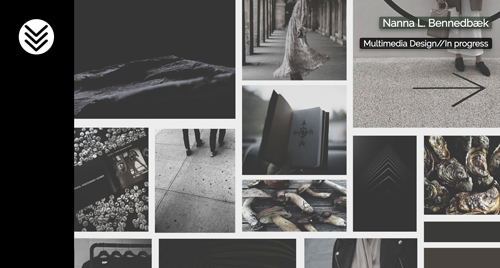
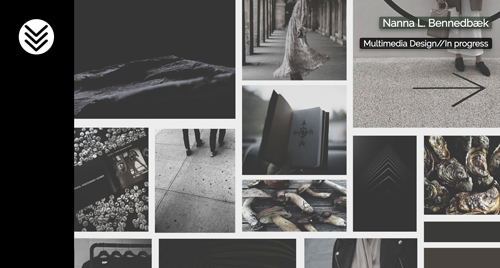

As a schoolproject we were asked to make an online version of our portfolio, build from scratch with HTML and CSS. It had to be with a flawless coding and a structure of files, documented in GitHub.
See full project descriptionWebsite design
I began the project by sketching the kind of web structure I needed to match my portfolio prototype. When I thought the skeleton was in order, I started coding the web layout with HTML in Dreamweaver and pasted the content I wanted to present. When all of the content was in place, I started styling the website with CSS. During the process I realized, that I had made it too difficult for myself to navigate in the different codes not having been thorough enough with my skeleton of the structure. I quickly learned that every detail of content has to be thought through, placing it in the correct structure from the beginning of the project in order to reach the layout I wanted. This have been a great learning process, and the next time I am to build a website, it will change my approach to the project as it will make me able to be more efficient and reach the layout result I want.
See the result